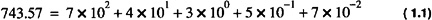
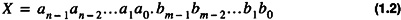
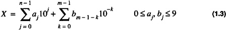
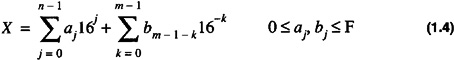
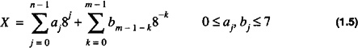
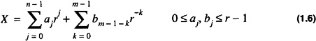
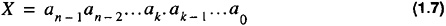
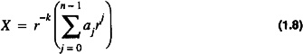

by Alan Parker
CRC Press, CRC Press LLC
ISBN: 0849371716 Pub Date: 08/01/93
|
|
Algorithms and Data Structures in C++
by Alan Parker CRC Press, CRC Press LLC ISBN: 0849371716 Pub Date: 08/01/93 |
| Previous | Table of Contents | Next |
This chapter introduces the various formats used by computers for the representation of integers, floating point numbers, and characters. Extensive examples of these representations within the C++ programming language are provided.
The tremendous growth in computers is partly due to the fact that physical devices can be built inexpensively which distinguish and manipulate two states at very high speeds. Since computers are devices which primarily act on two states (0 and 1), binary, octal, and hex representations are commonly used for the representation of computer data. The representation for each of these bases is shown in Table 1.1.
| Binary | Octal | Hexadecimal | Decimal |
|---|---|---|---|
| 0 | 0 | 0 | 0 |
| 1 | 1 | 1 | 1 |
| 10 | 2 | 2 | 2 |
| 11 | 3 | 3 | 3 |
| 100 | 4 | 4 | 4 |
| 101 | 5 | 5 | 5 |
| 110 | 6 | 6 | 6 |
| 111 | 7 | 7 | 7 |
| 1000 | 10 | 8 | 8 |
| 1001 | 11 | 9 | 9 |
| 1010 | 12 | A | 10 |
| 1011 | 13 | B | 11 |
| 1100 | 14 | C | 12 |
| 1101 | 15 | D | 13 |
| 1110 | 16 | E | 14 |
| 1111 | 17 | F | 15 |
| 10000 | 20 | 10 | 16 |
Operations in each of these bases is analogous to base 10. In base 10, for example, the decimal number 743.57 is calculated as

In a more precise form, if a number, X, has n digits in front of the decimal and m digits past the decimal

Its base 10 value would be

For hexadecimal,

For octal,

In general for base r

When using a theoretical representation to model an entity one can introduce a tremendous amount of bias into the thought process associated with the implementation of the entity. As an example, consider Eq. 1.6 which gives the value of a number in base r. In looking at Eq. 1.6, if a system to perform the calculation of the value is built, the natural approach is to subdivide the task into two subtasks: a subtask to calculate the integer portion and a subtask to calculate the fractional portion; however, this bias is introduced by the theoretical model. Consider, for instance, an equally valid model for the value of a number in base r. The number X is represented as

where the decimal point appears after the kth element. X then has the value:

Based on this model a different implementation might be chosen. While theoretical models are nice, they can often lead one astray.
As a first C++ programming example let’s compute the representation of some numbers in decimal, octal, and hexadecimal for the integer type. A program demonstrating integer representations in decimal, octal, and hex is shown in Code List 1.1.
Code List 1.1 Integer Example
In this sample program there are a couple of C++ constructs. The #include <iostream.h> includes the header files which allow the use of cout, a function used for output. The second line of the program declares an array of integers. Since the list is initialized the size need not be provided. This declaration is equivalent to
The void main() declaration declares that the main program will not return a value. The sizeof operator used in the loop for i returns the size of the array a in bytes. For this case
The cout statement in C++ is used to output the data. It is analogous to the printf statement in C but without some of the overhead. The dec, hex, and oct keywords in the cout statement set the output to decimal, hexadecimal, and octal respectively. The default for cout is in decimal.
At this point, the output of the program should not be surprising except for the representation of negative numbers. The computer uses a 2’s complement representation for numbers which is discussed in Section 1.1.3 on page 7.
Code List 1.2 Program Output of Code List 1.1
| Previous | Table of Contents | Next |
){kind=link}
){kind=link}
){kind=link}